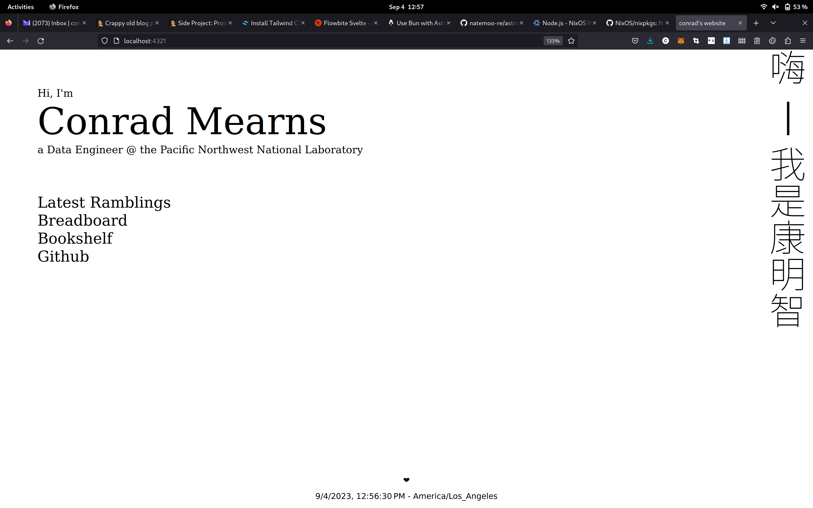
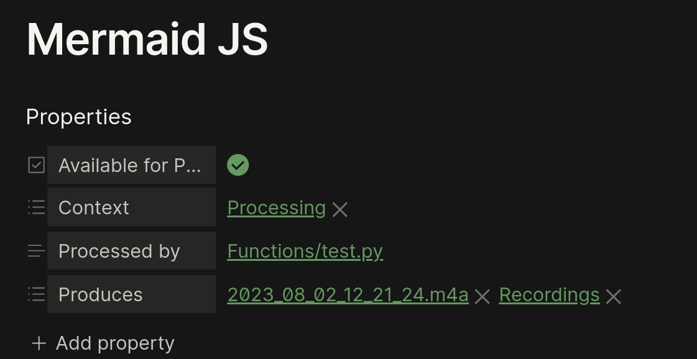
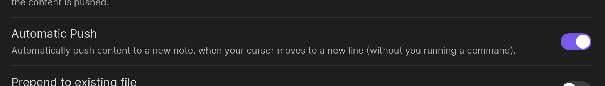
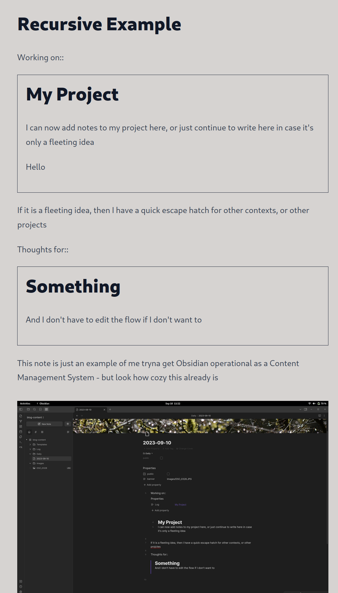

Redoing This Blog
Upgrading Astro, trying Bun and Flowbite, and wondering how to get a 2,000-note Obsidian vault onto the site.
Many things on this site may be broken for a while we I redo everything. I'm attempting to upgrade Astrojs, and had already made a wreck of dependencies through other things I was working on.
So for now - this is what my package.json was...
{
"name": "@example/basics",
"version": "0.0.1",
"private": true,
"scripts": {
"dev": "astro dev --host",
"vite": "vite --host --https",
"start": "astro dev",
"build": "astro build",
"preview": "astro preview",
"astro": "astro"
},
"devDependencies": {
"@astrojs/image": "^0.13.0",
"@astrojs/mdx": "^0.10.0",
"astro": "^3.0.8",
"sharp": "^0.31.3",
"twemoji-emojis": "^13.1.0"
},
"dependencies": {
"@astrojs/markdown-component": "^1.0.1",
"@astrojs/rss": "^1.0.3",
"@astrojs/svelte": "^2.0.0",
"@flowershow/remark-wiki-link": "^1.0.0",
"@vitejs/plugin-basic-ssl": "^1.0.1",
"d3": "^7.6.1",
"fast-xml-parser": "^4.0.11",
"https": "^1.0.0",
"mdast-util-to-string": "^3.1.1",
"node-stun": "^0.1.2",
"node-turn": "^0.0.6",
"p5": "^1.5.0",
"p5-svelte": "^3.1.2",
"reading-time": "^1.5.0",
"rehype-katex": "^6.0.2",
"rehype-mathjax": "^4.0.2",
"rehype-toc": "^3.0.2",
"remark-math": "^5.1.1",
"remark-toc": "^8.0.1",
"rss-parser": "^3.12.0",
"stardust-core": "^0.2.4",
"stardust-webgl": "^0.2.4",
"svelte": "^3.55.1"
}
}
I'm also going to finally give Bun a shot, since I'm having some versioning issues with Node and NixOS

have some errors in some of the modules but that's okay, I'll keep removing this slowly over time
Since I discovered Flowbite, I've had a lot of fun using it. Getting it installed means I'll have a sensible way to make some quick additions and changes further on
https://flowbite.com/docs/getting-started/astro/
2023-09-09
Veilid is out! I'm really wanting to dig in to the internals, and it would be fun to blog about the experiments as I go - especially since the documentation is going to be non-existent / spotty for some time to come.
I'm stuck on a problem regarding data though - something I have written about before but, as is apparent - such writings are not available here on the blog presently.
My main collection of notes started as a single massive .txt file that I continuously appended to. At one point, I had mad VIM macro's to make my own hyperlinks. All of this was done because I got swept away by the How to Take Smart Notes craze. I tried Roam, logseq, but since then have stuck with Obsidian.
It has it's issues - but is generally exactly what I need. The biggest flaw is that I think about my content in a very structured way, but markdown doesn't enable me to make use of this.
I've made and used some minor plugins and shell scripts to help decompose large notes based on their presumed content, but ultimately the vault is still a mess. I have around 2000 notes and around 300,000 words. Beyond the vault, I have tons of pictures and videos of projects I've meant to share but never had the right solution to do so.
With Astro, it's easy enough to copy files into the blog and rebuild it - but ideally the Website build step and content update step should remain seperate.
I also have the issue of having a shit ton of files and several large videos (which sure, could be uploaded to Youtube but...) that won't fit nicely into Github.
I've dreamt of a system where user's could access my site and be connected to my servers over WebRTC or something similar - giving them access to what's been authorized as public without me having to copy the data somewhere else (and pay for it).
This is one of the reasons why Veilid is so exciting right now - in theory, it can handle the P2P connection but it also manages to keep the route and IP information safe for both users. My only current concern is the speed, but I can imagine it as being useful as a way to establish trusted connections that can then be used to set up untrusted connections when desired / appropriate.
So what comes first?
Perhaps the simplest thing to do is to craft my own, very small CMS system in Python or on top of Bun. I know and use Python the most, so this is likely the approach I'll take.
I like WebSockets, but they might be overkill for what I specifically need to build. REST is more than enough for what I need. A Flask app is easy to make.
In terms of connectivity, since I haven't solved the connection problem, I can just push my issue on to the user. I don't want to expose my home's IP, and in many cases, Zerotier is just easier to use (since I also don't know my own IP).
If I or a user wants access to my content, they can enter the IP address they wish to use (an mDNS domain name could even be the default - which would be fun) and the CMS can populate that way.
https://flask-jwt-extended.readthedocs.io/en/stable/basic_usage.html
https://docs.astro.build/en/guides/content-collections/
https://docs.astro.build/en/guides/data-fetching/#fetch-from-a-headless-cms
https://docs.astro.build/en/core-concepts/routing/#dynamic-routes
Depending on what else I want - it would be cool to get Veilid integrated with the site for the purpose of building Chat/Comment>s and other features.
Well, it took longer than I expected but I got a lot of things I broke sorted back out.
The site still has a looong way to go, a lot of things are still broken like
- ~~Wiki-links~~
- Actually, it seems to work just fine - 2023-09-4 Redoing this Blog
- I would like to provide overrides though
- Transcluded images
- Doesn't work:

- Styling is ugly af
- Styling within markdown
I'm trying to figure out what I need to do to make the CMS for Astro based on my Obsidian files.
Ultimately, I want something that will be usable with a content-addressable hash oriented file store.
From utility alone though - each Obsidian markdown file supports a frontmatter - and returning the file to Astro without resolving or removing the frontmatter first causes it to get rendered as Markdown.
I also want to be able to break apart each markdown file into several chunks, having each chunk remember what note it came from, what algorithms or operations produced it

It looks like I can get images to work if I do
instead of![[Pasted image 20230910082353.png]]
The idea behind some of these frontmatter values was that I wanted a way to keep better track of how content was being used to generate new content. Since I'm wanting to decompose notes into new notes, run algorithms and generators (like ChatGPT) on notes to create new ones, then I'll want a way to link them back together
The links in this example are purely fictitious, but helpful for visualizing what kind of processing I want to do.
As yaml, it looks like this
Available for Processing: true
Context:
- "[[Processing]]"
Processed by: "[[Functions/test.py]]"
Produces:
- "[[2023_08_02_12_21_24.m4a]]"
- "[[Recordings]]"
Something else I'd really like to have functional in the more near term is a better way to decompose semantic information from wikilinks.
While I'm writing, I'll want to mention technologies, resources, or other systems like Astro. Currently, this link gets turned into a link like .../blog/notes/Astro, which is non-existent.
What would be better, is a system that - helps to identify deadlinks like this to broaden content creation - utilizes the frontmatter or other tags to create popovers - organizes collections based on Technologies, Projects, Time, Issues, Github links, etc
I also really want to create an interactive IBIS system as well, which could make use of similar properties in the frontmatter
IBIS-Question:
- "[[Some Issue]]"
- "[[Some Pro]]"
...
IBIS-Issue:
...
IBIS-Pro:
- "[[Some Position]]"
As an aside, I found this page and it's very neat https://svelte.recipes/components/force/
I'm still not quite ready - what are some modes I want to perceive content
- Project Logs
- How is development on a project coming along? Similar format / prose to this post
- When viewing project logs, I want to see every entry all together, listed according to date. Ideally, this is how I would edit such documents as well
- Project Pages
- Final / current deployment of a project, documentation, summaries, data, etc.
- Notifications for updates would be nice to have
- Daily Notes
- Dumping ground for everything, ideally Project Logs too, or at least, snippets of them.
It's beneficial to have project logs both in Daily Notes and in single, massive Project Log files. Ideally, transclusion is the mechanism to keep the element seperate but usable in both contexts. Because of this, it's probably best to think about these as being individual files, despite my urge to write everything as 1 big file.
This person uses the make.MD plugin to handle editable transclusions.
The issue with transclusions as an entry method is that if I have a Daily Note and I have a Project Log page, then Transclusions are only added to a single file at a time - unless I remember to edit the other.
By utilizing Templater for Obsidian, I can make a more seamless way of constructing simple transclusions.
I start typing /flow, and enter a name, and create the new file.
---
Log: "[[<% tp.file.title %>]]"
---
# <% tp.file.title %>
<% tp.file.rename(tp.date.now() + " " + tp.file.title + " Log") %>
This has a weird side-effect where transclusion syntax ends up with two exclamations like !![[Log]], and I have to click or hit Ctrl Alt Enter to create the new note.
I found this while searching for a solution: https://github.com/lizard-heart/obsidian-note-content-pusher

But this isn't triggering the templates...
I do particularly like the 'Note Pusher' concept as a way to track provenance of when content was added to a note, but there are some conditions that would make this difficult to implement in the way I would want it to work.
Another idea that may be useful is adopting the Tag:: syntax from dataview.
webm's dont work?
/Screencast_from_2023-09-10 11-10-49.webm
This is probably good enough for now. Because transclusions aren't gonna work how I want for a while, I'll probably just stick with links to make log notes
Though, making transclusions work on the backend would be easier...
So let's start on that now I suppose.
I have Daily Notes and Logs
The first main thing I need is a list of each, and a way to get the content for rendering
I created a new python poetry project with Typer, Flask, and a plugin I just found called obsidiantools
I've made an extension to marked.js that recursively resolves transclusions. This is juts the first pass, eventually I'll need to come back to this and do some testing and make sure that infinite recursion is handled appropriately.
I have a file called marked_wiki.js
export const make_extension = (resolver, instance, wrapper) => {
return {
extensions: [
{
name: "marked_wiki",
level: "block",
start(src) {
return src.match(/\!\[\[/)?.index;
},
tokenizer(src) {
const rule = /^!\[\[([^[\]]*)\]\]/;
const match = rule.exec(src);
if (match) {
return {
type: "marked_wiki",
raw: match[0],
text: this.lexer.inlineTokens(match[1].trim()),
image: null,
resolved: null,
};
}
},
renderer(token) {
if (token.image) {
return `<img src=${token.image} alt="${token.raw}" />`;
}else if (token.resolved) {
return token.resolved
} else {
return `${this.parser.parseInline(token.text)}`;
}
},
},
],
async: true, // needed to tell marked to return a promise
async walkTokens(token) {
if (token.type === "marked_wiki") {
const data = token.text[0].text;
const res = await resolver(data);
if (res && res.type.match("image.*")) {
token.image = URL.createObjectURL(res);
}
else if(res && res.type.match("text.*")) {
token.resolved = await res.text()
token.resolved = await instance(token.resolved)
if (wrapper) {
token.resolved = await wrapper(token.resolved)
}
}
}
},
};
};
which exports a function that generates the marked extension. The reason to do this is to provide extensibility to how content is rendered, how content is resolved, and for recursion.
In Svelte, it's pretty easy to use. I would like to figure out a better way to wrap transclusions in custom HTML, but for now, a format string is fine.
import { marked } from "marked";
import { make_extension } from "./marked_wiki.js";
const get_content = async (slug) => {
const response = await fetch(`http://localhost/get/${slug}`);
const blob = await response.blob();
return blob;
};
const wrapper = (slot) => {
return `<div class="p-4 border border-slate-900">${slot}</div>`
};
marked.use(make_extension(get_content, marked, wrapper));
The same get_content function is used to gather the initial page, and after confirming it's text, marked.parse can be called to start parsing.
The result is HTML from markdown, with support for Wikilink styled Images and embeds

Since creating the extension, I wonder if it's possible to get the image embed's working for static Astro pages?
On that note, I definitely still need a way to post certain blog elements to the static site so they can be accessed without network considerations. This whole process will be dependent on Users being within my LAN or having a shared Zerotier network.
Oh! Actually it turns out that the marked.js extension got loaded globally - which is slightly concerning but it means my transclusions are working.
For this page, that's annoying because I went through the effort of defining both wikilink and standard links for images.
However, it appears the change only works occasionally - even more of an issue.
Among other things - this whole process is probably a bad idea. Lot's of network requests are generated, and if this system is to eventually run on Veilid, this is probably no good for performance.
It would still be safer to run this system in the backend.